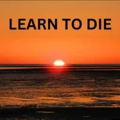
LEARN TO DIE
- …
LEARN TO DIE
- …
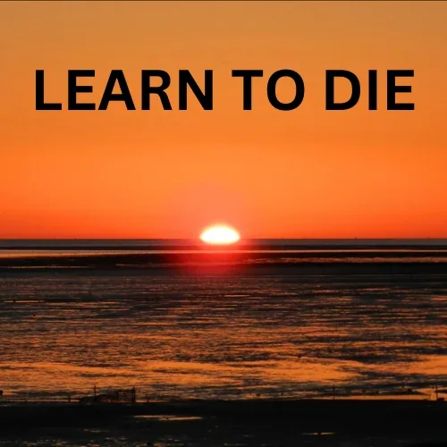
- "Learning to die is learning to live."- - Ingrid Schmithüsen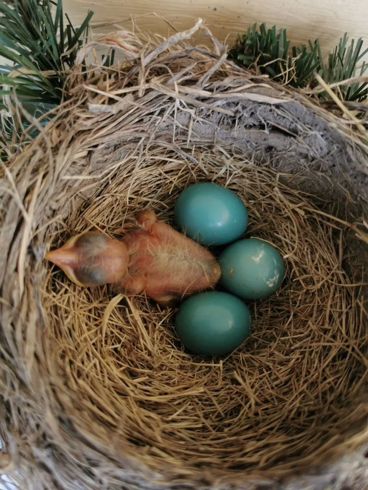
- #### I am Ingrid. I am born because I was needed.- #### I did great for about 3 years, and then emotions and box mechanisms took over.- #### When I was 30 years old, I lost for the first time my singing voice. Not a good thing for a professional singer.- #### The loss of my voice set me back on track, to the path of consciousness.- #### First through the encounter of a seer, later through non-violent communication, the Work of Byron Katie and then Possibility Management.- #### Almost 2 years ago, I had the first slight symptoms of a disease called:- #### bulbar form of amyotrophic lateral sclerosis - ALS.- #### I lost my voice again, this time my speaking voice.- #### I was ready for this disease, in the sense that I didn’t put any story on it.- #### This disease exists in the world. Why it should not happen to me?- #### I am back on track.- #### I am what is needed.- #### I live full out.- #### I love my life, every single second of it. - #### You are born because you were needed. You lost track, like everybody else, in your childhood, through one or several traumatic experiences or because you learned being adaptive.- #### There is nothing wrong to loose track. The important thing is to get back on track without reproaching yourself, in other words, without falling into parent voice mode. This is called Decontamination. Other words are Clarity or Path of Enlightenment or Wisdom or Personal Growth.- #### Possibility Management offers- Decontamination (archived — not captured)with a capital D. I did 14 months of daily practice of Decontamination, 10 to 30 minutes a day. I started this practice 6 months before my first tiny little symptoms, and one year before the diagnosis of ALS.- #### This practice allowed me to have no resistance at all, neither for the symptoms, nor for the diagnosis. I stopped the practice two months after the diagnosis because I felt I have integrated to live (most of the time) in non resistance.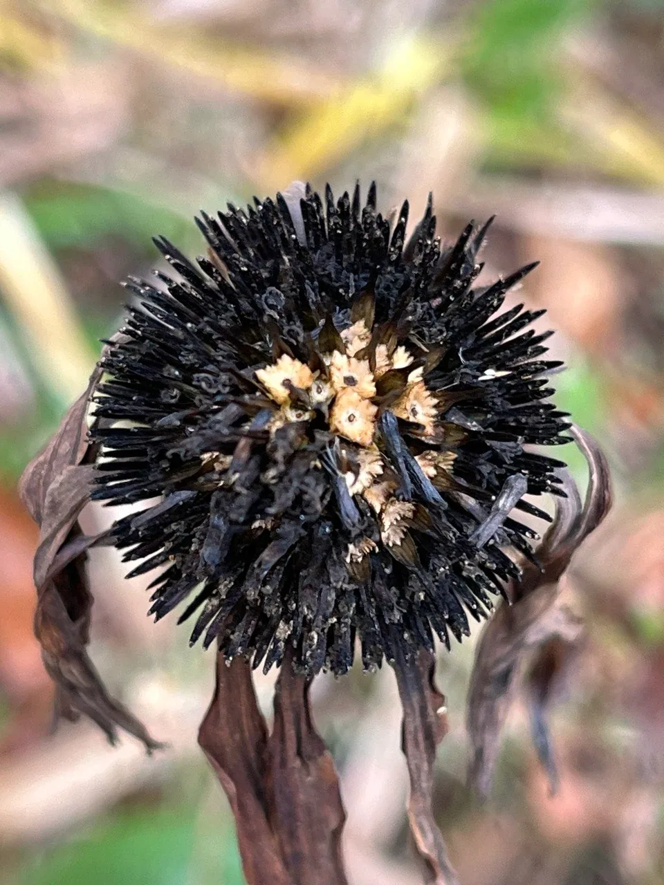
- #### Usually when we encounter things we don’t like, for example nasty problems and difficulties or “bad news”, we develop resistance in one or more of our five bodies.- #### Due to our past, we repeat old patterns in situations which need our full creative potential. I was lucky enough to have friends with their swords out to tell me when I was in victim mode. Before, I didn’t even know that I was in victim mode. I thought I was right.- #### That was three years before I was diagnosed. In this short amount of time, I have changed from a complaineress (about my husband) to a creatoress, and from an adaptive life in a box to a person who lives full out.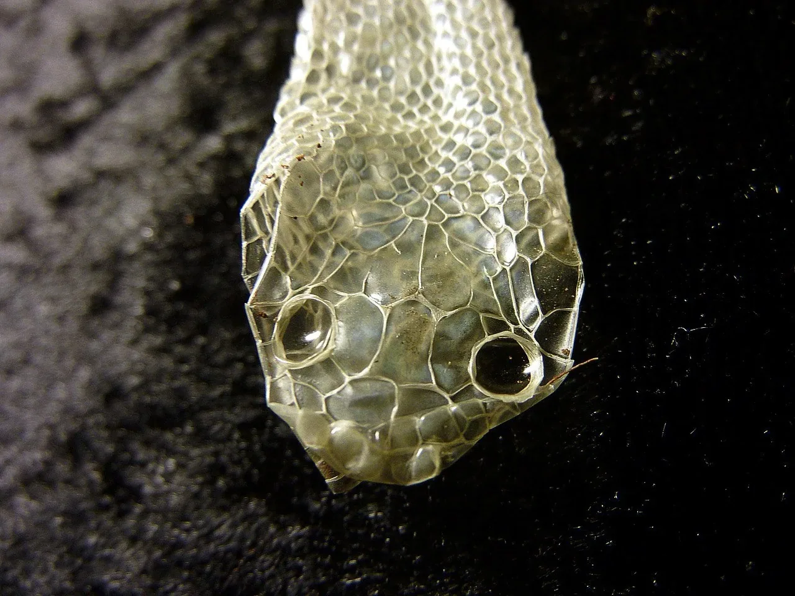
- #### If I can do it, you can do it too.- #### Decontamination is one way. There are many others. If decontamination resonates with you, you might find the video I did after one year of practice, four days after the diagnosis helpful.- ( - the video,- with German subtitles,- with French subtitles)- #### What else has changed?- #### I discovered that not doubting myself is a decision, one of many harvests of my Decontamination practice.- #### Doubting yourself is listening to bullshit.- #### I decided to not doubt myself, not a single second.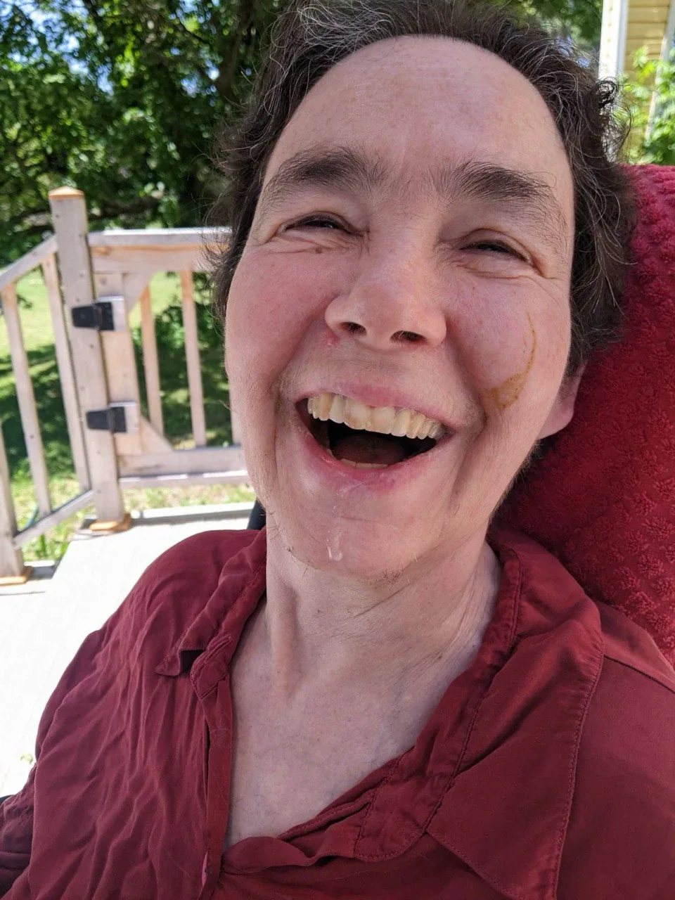
- #### One year after the diagnosis, I had some really tough weeks when I lost “my” last spots of autonomy. I learned that “my” physical body is not mine.- #### It belongs to Life. I have to give up any idea of “my” or “mine”.- #### ALS is considered a disease without pain, but I had severe pain due to spasticity.- #### I developed the reflex to be in a Here and Now of 3 seconds in the moment I feel pain or discomfort. It works.- #### And it works for emotional “discomfort” too, like fear, anger and sadness.- #### Over the time, not only my speech slowed down, before I lost it completely, everything is slowing down. I love it.- #### Slowness makes room for the comedy of Life. I have never laughed as much as I do now. Together with my caregivers, we discover how hilarious life is, for example when I get a Salvador Dali moustache from my smoothie while eating.- #### Such simple things take on adifferent dimension through slowness.- #### It is the pace of Love.- #### Life is not a drama, but a comedy.- #### I live in Love and Joy. That is what Life wants for you too.- #### If I can do it, you can do it too. - Requiem for Ingrid Schmithusen - Dear Ingrid, what a pleasure and an honor to be part of this village that you have gathered from your Love and your Being. How special that you created the possibility of a deep village connection for so many people. We were nearly 100 people being together celebrating you and celebrating your life. - This was Requiem, a ceremony from Archiarchy. Most cultures come together after a person has already died. That is safer. Nobody knows the incompletes you carry with someone when you attend a modern culture funeral. In Archiarchy, we come together before a person dies to complete communications in life with the whole village as witness. This is more risky. What if the person does not die then? Requiem is a huge healing space. It is possible that so much changes they don't have to die then. If that happens, the village comes back together and we have a further Archan ceremony. We call it Resurrection. - An in-person Requiem can last up to three days and nights. Online we met for over two hours. Still a lot more could have been shared, even though a lot was shared. There are so many examples of the best possible things a person could say to another person. It is love happening. - If you intend to watch the Requiem, prepare some tissues. - Song at the end of the Requiem for Ingrid Schmithusen - WELCOME !- from - Vera Luísa Franco- WELCOME INGRID! I AM SO GLAD YOU ARE HERE.- I want to share a legend about Ingrid, because even with the ALS she is more alive and creative than many people I know who have no problem moving their body or chewing food. - Ingrid started her journey in Possibility Management with the study group. At some point I remember holding an EHP for her and saw how much gusto for aliveness she had in her, how much despite some adversities— including the risk that she would be somewhat crystallised in her old ways—she was determined to unfold beyond the prison of the role of a woman in patriarchy, of a woman after 50, and of a social worker. - Ingrid came to one of my online ETBs and the 9 of us went through the journey in March 2021 unfolding more and more, and becoming less and less modern-culture-insane. Ingrid was the elder of the group but went even more full out than some of the younger participants. - At some point Ingrid came into the Possibilitator Training and last year was diagnosed with ALS. She not only continued to participate in the calls that sparked her heart, but her participation was very creative. She recorded videos from her clarity and experience in 3 different languages, and even when using an automated voice to speak the words she typed in the study group calls, the rest of the group could easily feel her. - Now the even more amazing legend is that at some point Ingrid was having trouble sleeping or falling asleep because of physical discomforts and complications of the ALS. So she started a telegram group with daily evening calls where the village can just breathe with her. She goes to sleep and wakes up to the faces of loved ones across the world, and her simple space is healing in and of itself. - Ingrid you create with so much love breaking rules about what it is to be with a diagnose, or physical limitations, and make more love happen on the world. We are lucky to have you in it! - To Ingrid with Love from Nicole- I have something, after reading you above, Ingrid, I don't know how it will come but I will go... - I have been watching you, holding space for you, with you, you have held space for me, before and since your diagnosis. - Somehow you have been becoming more alive since your diagnosis than I think you were before. I see you putting to use what you were already learning in an even smaller here and now and this makes you unlike any person I ever encountered who 'knew' they were going to die in the not-so-distant or unknown future. - You encounter real losses, like when you lost the abilty to swallow water, and to turn your body in your bed, and (almost?) immediately you grieved. Then you kept on living, shining, loving and learning. - It is as if you have no resentment that you have a disease. You do not take revenge on your body for getting sick, nor do you blame anyone, not yourself, nor your culture. It floors me. Maybe that expression, 'floors me', means it brings me, too, closer to reality. - I will die one day. I have yet to discover how it will go for me. Being alongside you while you discover how it goes for you has shifted my questions from "how will I cope with dying?" to "how do I keep living while I am coming closer and closer to the exit door of my physical body life, which is called 'death', regardless of how or when it happens"? - The cool thing is I get to start now. And now. And now. I get to hear about things you did in the past that set you up for learning what you are learning now. I get to see you as a living example of living full-out all the way to death. - Sometimes I pull away from spaces with you, because it is so maddening for me that I let myself be dead in the ways I do. What are they? Putting myself under pressure to 'succeed', be a better Possibility Manager, space holder, person. You don't give creedence to any of that, you just BE YOU and do what you want, and it is inspiring, transformational, sobering, and deeply touching for me. - I am alive because I am needed. You said this to me and I am slowly but surely letting it in. I have a sense of what I am needed for, and that each moment I breathe, I can become an answer to what I am needed for. - I cannot tell how much more time I have to be what I am needed to be, here in this physical body. I am falling in love with my physical body more and more, after taking it for granted (which it was - it was granted!), relating to it as the extraordinary, constant and astonishing intersection of five bodies that it is. For a limited time only. - My birthday suit will be my deathday suit. - It wears goosebumps more often, and I love this. - I used to try to prepare myself for when you, Ingrid, will die. I am learning to live alongside of you, from over here on the other side of Canada. It is, I have decided, the only fitting practice for how I will 'cope' after you die. - You are an Archetypal force of nature. You have brought Love to me that feeds me and creates possibility for me to be what is needed. - I will open some more to let that in. - Thank you for the gift of the example you are living. This example - YOU - are certainly needed. - Love, Nicole - WHAT DIES?- HOW CAN DYING SOLVE YOUR PROBLEMS?- WHAT CAN YOU DO IF SOMEONE INVITES YOU TO BE WITH THEM AS THEY DIE? - ## 'Tis a Fearful Thing- ‘Tis a fearful thing - to love what death can touch. - A fearful thing - to love, to hope, to dream, to be – - to be, - and oh, to lose. - A thing for fools, this, - and a holy thing, - a holy thing - to love. - For your life has lived in me, - your laugh once lifted me, - your word was gift to me. - To remember this brings painful joy. - ‘Tis a human thing, love, - a holy thing, to love - what death has touched. - (Yehuda HaLevi)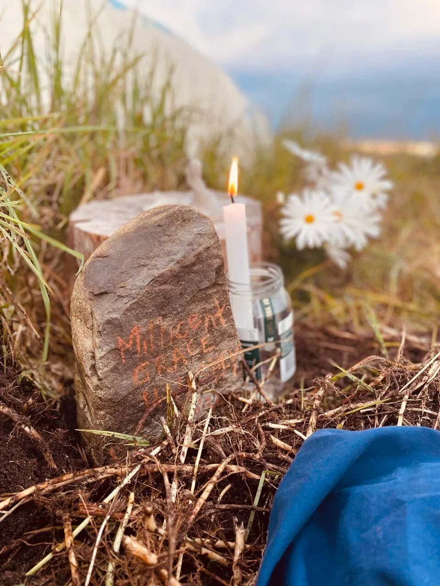
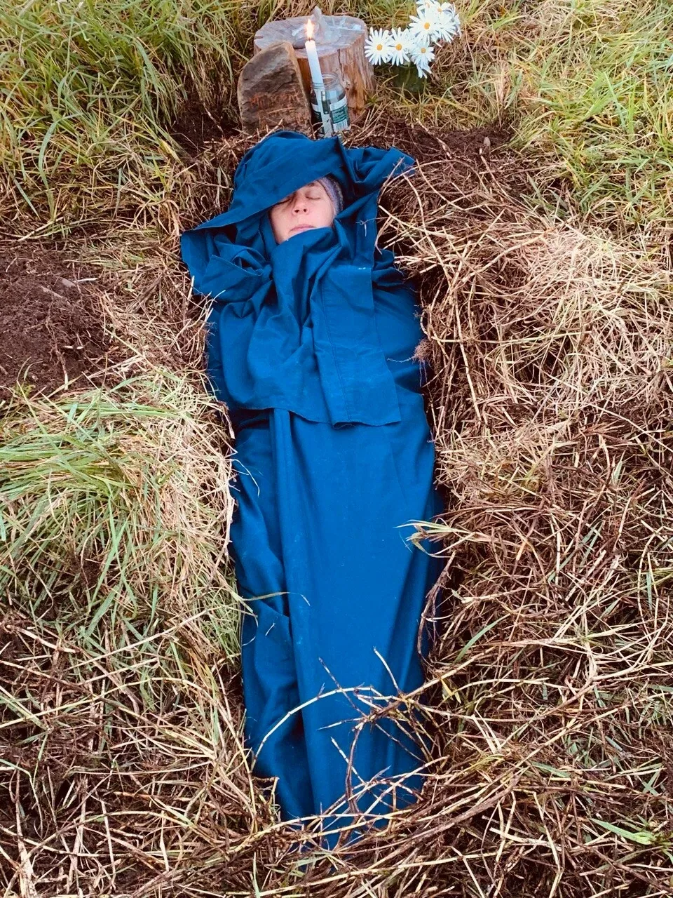
- Learning To Die - Crossing the threshold into life.- ...written by- Millicent Haughey- You are taught many things growing up, not how to die. It is a very important skill that is missing in modern culture education. - As a teenager two of my friends chose to kill themselves literally and they did. They succeeded in taking their own lives. - Adolescence is a time of great transition. Transition means to change from one form to another in doing so, you die to what was. - It is likely adolescence is the first time it becomes necessary to consciously engage with the process of dying. - However, the village does not remember yet the wisdom of how to be with a dying person. Especially a young, dying person. - YOU ARE ALL OF IT- By- CLARE DUBOIS- from TreeSisters- My partner Mark brought a dreadful bug back from the East Coast a month ago. If it wasn't Covid, it was its first cousin and boy did it have its way with us. I feel like I literally lost three weeks timewise, and yet there was such gold to be found in that feverish slog. Boy was that such a thing. - During the six nights where I barely slept, sitting up coughing solidly from 8pm until the following morning, it turned into the most extraordinary practice of breath management, focus and prayer. The only way to not cough was to literally hold my breath, and focus on every sensation that took my attention elsewhere to soothe my system. Unexpectedly, that practice constantly took me to Gaza, so much so that my night times literally felt split between two worlds. - Instructions from a Dying Person- NOTE: We are all dying persons...- ## RAW Edgecast: Being Love Whilst Dying - Ingrid Schmithüsen /w Hannah Abouzahrah and Annika Korsten- ## How to be happy nonetheless: Ingrid Schmithüsen & Susanne Hutzler- ## Ingrid's Anti-Video No. 1: Joy- ## Ingrid's Anti-Video No. 2: Bullshit (with subtitles)- ## Ingrid's Anti-Video No. 3: Body and Time (with subtitles)- ## Anti-Video No. 4: Transformation Is Happening (with subtitles)- ## Anti-Video No. 5: False Well Being (with subtitles)- ## Anti-Video No. 6: Resistance (with subtitles)- ## Anti-video No. 7: Vastness (with subtitles)- ## Anti-video No. 8: The Gift (with subtitles)- ## Daily Part Work - Adult, Child, Parent, Gremlin Egostate (decontamination)- ## Anti-video No. 9: What is health?- ## Anti-video No. 10: For what do I need words?- ## Anti-video No. 11: The How-Question- ## Anti-video No. 12: Wanting to be right- ## Anti-video No. 13: Life is!- ## Anti-video No. 14: What is worth living for- ## Anti-video No. 15: Relics- ## Anti-video No. 16: Sleep- ## Anti-video No. 17: Newborn- ## Anti-video No. 18: Presence- ## Anti-video No. 19: Gratitude
- Skills That Help You Learn To Die
- Instructions from a Dying Person- NOTE: We are all dying persons...- ## RAW Edgecast: Being Love Whilst Dying - Ingrid Schmithüsen /w Hannah Abouzahrah and Annika Korsten- ## How to be happy nonetheless: Ingrid Schmithüsen & Susanne Hutzler- ## Ingrid's Anti-Video No. 1: Joy- ## Ingrid's Anti-Video No. 2: Bullshit (with subtitles)- ## Ingrid's Anti-Video No. 3: Body and Time (with subtitles)- ## Anti-Video No. 4: Transformation Is Happening (with subtitles)- ## Anti-Video No. 5: False Well Being (with subtitles)- ## Anti-Video No. 6: Resistance (with subtitles)- ## Anti-video No. 7: Vastness (with subtitles)- ## Anti-video No. 8: The Gift (with subtitles)- ## Daily Part Work - Adult, Child, Parent, Gremlin Egostate (decontamination)- ## Anti-video No. 9: What is health?- ## Anti-video No. 10: For what do I need words?- ## Anti-video No. 11: The How-Question- ## Anti-video No. 12: Wanting to be right- ## Anti-video No. 13: Life is!- ## Anti-video No. 14: What is worth living for- ## Anti-video No. 15: Relics- ## Anti-video No. 16: Sleep- ## Anti-video No. 17: Newborn- ## Anti-video No. 18: Presence- ## Anti-video No. 19: Gratitude
- Skills That Help You Learn To Die


 - Books- #### Learning to die could very well involve some learning...
- Books- #### Learning to die could very well involve some learning...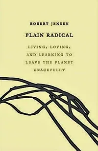
- Plain Radical: Living, Loving and Learning to Leave the Planet Gracefully- by Robert Jensen (about Jim Koplin)- There was nothing out of the ordinary about Jim Koplin. He was just your typical central Minnesota gay farm boy with a Ph.D. in experimental psychology who developed anarchist-influenced, radical-feminist, and anti-imperialist politics, while never losing touch with his rural roots. But perhaps the most important thing about Jim is that throughout his life, almost literally to his dying breath, he spent some part of every day on the most important work we have: tending the garden. - Plain Radicalis a touching homage to a close friend and mentor taken too soon. But it is also an exploration of the ways in which an intensely local focus paired with a fierce intelligence can provide a deep, meaningful, even radical engagement with the world. - American Book Of The Dead- by E. J. Gold- This unique contemporary work brings the timeless Tibetan Bardo teaching into current American culture and language, with 49 days of readings for someone who has died or who is preparing for the dying experience. This book has been and still remains an important tool for providing a spiritual service to a dying person as opposed to grieving, processing loss, or mourning for that person's passage. The subjects E.J. Gold covers in his many books range from the use and invocation of attention and presence; the waking state; death and dying; practical work on self; shamanism; higher bodies; artifact reading, imprinting and use; cosmic laws; and the suffering of the Absolute. Central to his work is preparation for the Bardo - the Tibetan word for the state following death of the body, as the consciousness unravels and one chooses one's next rebirth. Mr. Gold affirms that through knowledge and experience one can navigate this state and successfully maintain a thread of consciousness between lifetimes, and in this way can become an individual evolving Soul with a greater purpose than ordinary man. To aid others in achieving this end, Gold has entered cyberspace, building an elaborate gaming engine with which he can simulate spaces common to the Bardo, inventing labyrinthine games to be played individually or in multi-user groups. In this way, he hopes to convey the atmospheres and sights of many bardo spaces, to familiarize the player with what they are likely to encounter on the other side. - Journey To Ixtlan- by Carlos Castaneda- In - Journey to Ixtlan, Carlos Castaneda introduces readers to this new approach for the first time and explores, as he comes to experience it himself, his own final voyage into the teachings of don Juan, sharing with us what it is like to truly "stop the world" and perceive reality on his own terms.Originally drawn to Yaqui Indian spiritual leader don Juan Matus for his knowledge of mind-altering plants, bestselling author Carlos Castaneda immersed himself in the sorcerer's magical world entirely. Ten years after his first encounter with the shaman, Castaneda examines his field notes and comes to understand what don Juan knew all along--that these plants are merely a means to understanding the alternative realities that one cannot fully embrace on one's own.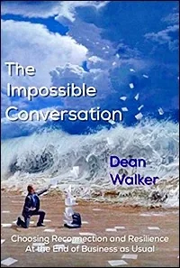
- The Impossible Conversation: choosing reconnection and resilience at the end of business as usual- by Dean Walker- The Impossible Conversation is about keeping our hearts open even when we consider the most challenging aspects of our present and near future. In The - Impossible Conversationwe are invited to intimately reconnect: with our own inner wisdom, with the miracle that is every other human and with our magnificent, magnanimous Earth. What a relief to see the situation defined not as a 'problem' that can be 'solved', but rather as a 'predicament' that we must live with. The kinds of 'reconnection' described by Walker (reconnection with deeper self, with others, and with the Earth) would be attractive even if the situation were normal. Given humanity's self-generated situation on Earth, reconnections are necessary. From now on, we can only grieve what we have inadvertently done to ourselves: grieve, and live intensely; behave well as we witness the gathering storm. Very few people want to accept this, and prefer to persist as if our way of life could continue. It is time for reconciliation. Here is how.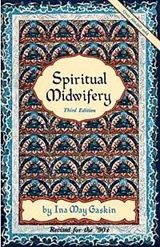
- Spiritual Midwifery- by Ina May Gaskin- The original - Spiritual Midwifery, published in 1976, introduced an entire generation of young women to the possibility of home birth and breast feeding. It also breathed new life into the all-but-vanished field of midwifery. This classic book on home birth is now in its fourth edition, with updated information on the safety of natural childbirth, new birthing stories, and the most recent statistics on births managed by The Farm ecovillage Midwives. Ina May also provides new information about potentially dangerous techniques routinely used in hospitals during and after birth, as well as the latest findings about VBAC (Vaginal Birth After Cesarean). Improved instructions for handling breech births are also given. Included are stories of working with Amish women, showing a different culture with a similar appreciation for natural childbirth.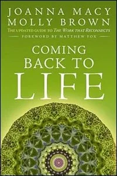
- Coming Back To Life- by Joanna Macy and Molly Brown- Deepening global crises surround us, causing many to fall prey to denial and despair. - Coming Back to Lifeshows how grief, anger, and fear are healthy responses to the harsh realities of our time, and that when honored, they can free us from paralysis and move us toward creative action. This new, completely updated edition of the classic text illuminates the extraordinary Work that has inspired hundreds of thousands to make strides towards the creation of a life-sustaining human culture. Buddhist scholar and environmental activist Joanna Macy and Molly Young Brown introduce the Work's theoretical foundations, revealing the angst of our era with remarkable insight. Pointing the way forward out of apathy, they offer personal counsel as well as easy-to-use methods for group process that profoundly affect people's outlook and ability to act in the world. - Getting Real- by Lee Lozowick- Adrift on the currents of worldly concerns, many who are serious about the spiritual path wonder how we can live our day-to-day lives with integrity and honour, in resonance with eternal truths. This is a collection of brash, wise and compassionate essays for those interested in the transformation process. - Star Maker- by (William) Olaf Stapledon- Star Makeris the science fiction classic about a human who is transported out of his body and finds himself able to explore space and other planets. The story describes a history of life in the universe and tackles themes such as the essence of life, of birth, decay and death, and the relationship between creation and creator. A pervading theme is the progressive unity between different civilizations.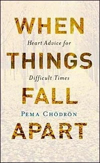
- When Things Fall Apart: heart advice for difficult times- by Pema Chödrön- How can we live our lives when everything seems to fall apart--when we are continually overcome by fear, anxiety, and pain? The answer, Pema Chödrön suggests, might be just the opposite of what you expect. Here, in her most beloved and acclaimed work, Pema shows that moving toward painful situations and becoming intimate with them can open up our hearts in ways we never before imagined. Drawing from traditional Buddhist wisdom, she offers life-changing tools for transforming suffering and negative patterns into habitual ease and boundless joy.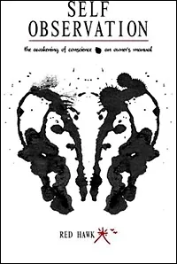
- Self Observation: the awakening of conscience: an owner's manual- by Red Hawk- This book is an in-depth examination of the much needed process of 'self'-study known as 'self observation'. We live in an age where the 'attention function' in the brain has been badly damaged by TV and computers - up to 90 percent of the public under age 35 suffers from attention-deficit disorder! This book offers the most direct, non-pharmaceutical means of healing attention dysfunction. The methods presented here are capable of restoring attention to a fully functional and powerful tool for success in life and relationships. This is also an age when humanity has lost its connection with conscience. When humanity has poisoned the Earth's atmosphere, water, air and soil, when cancer is in epidemic proportions and is mainly an environmental illness, the author asks: What is the root cause? And he boldly answers: failure to develop conscience! Self-observation, he asserts, is the most ancient, scientific, and proven means to develop this crucial inner guide to awakening and a moral life.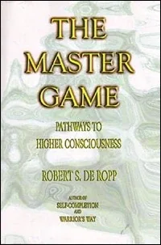
- The Master Game: pathways to higher consciousness- by Robert S. De Ropp- The Master Gameis a book concerned with games and aims. It is a compelling exploration of the human psyche and of the specific techniques through which man can achieve the highest possible levels of consciousness. This exploration, which involves every aspect of human behavior--the instinctive, motor, emotional, and intellectual--is, in the words of the author,- "The only game worth playing."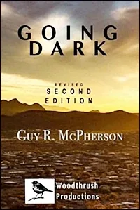
- Going Dark- by- Guy McPherson- We are the last individuals of our species on Earth. How shall we respond? How shall we act? If industrial civilization is maintained, climate change will cause human extinction in the near term. If industrial civilization falls, sufficient ionizing radiation will be released from the world's nuclear power plants to cause human extinction in the near term. In the wake of this horrific conclusion, conservation biologist Guy McPherson proposes we act with compassion, courage, and creativity. He suggests we act with the kind of empathy for which humans are renowned. In other words, he suggests we act with decency toward the humans and other organisms with which we share this beautiful planet. - Going Darkis the story of one scientist's response to the horrors we face. It is a deeply personal narrative infused with abundant evidence to support its terrifying claims. - Dying Experiments- There are three arenas for creating what you want:- 1. Focusing on other people's feedback about what you should want.- 2. Focusing on your understanding of what you want.- 3. Focusing on what you want.- To make a Proposal you need to be able to say, "- I want...- "- because if you are going to hold space for a team, or a project,- and you think it is not polite to say "- I want...- ",- then you won't be the Space through which the Bright Principles can serve your gameworld.- It is also crucial to know which 'I' is doing the wanting... - FACE THE REALITY THAT PEOPLE HAVE ALWAYS DIED, EVERYWHERE- #### Matrix Code- HOWTODIE.01- Modern society represses death. It is as if it does not exist. - When someone turns 80, we congratulate them with the words: "Congratulations! Here's to the next fifty years!" (Probably not.) - Modern medicine has the task of keeping the physical body alive for as long as possible. - Nursing homes and intensive care units are full of people who are kept alive artificially with the help of technology and the pharmaceutical industry. - We have forgotten how to die because we don't know how to really live. - Walk through a cemetery. All over the world, there are some beautifully designed urban cemeteries with tall, shady trees. - Walk through the rows and look at the graves. Read the inscriptions on the gravestones and work out how long the deceased person lived. - Think about the family structures. There lie the grandparents, here the parents, there the children. - Sit on a bench and look at the people walking around. Those who tend the graves, those who come to funerals. - There are over 200 cemeteries in Berlin. - Make a short visit to a cemetery every day. - Do this for a whole week. - Take your - Beep! Bookwith you. Let your thoughts and feelings run free and take notes.- After publishing your Past Live Vows article, please go to your free - https://login.startover.xyzaccount and register- StartOver.xyzMatrix Code- LEARNTOD.01. In the PROOF field, please enter the link to your article. This Experiment is worth 1 Matrix Point.
- FACE THE REALITY THAT PEOPLE HAVE ALWAYS DIED, EVERYWHERE- #### Matrix Code- HOWTODIE.01- Modern society represses death. It is as if it does not exist. - When someone turns 80, we congratulate them with the words: "Congratulations! Here's to the next fifty years!" (Probably not.) - Modern medicine has the task of keeping the physical body alive for as long as possible. - Nursing homes and intensive care units are full of people who are kept alive artificially with the help of technology and the pharmaceutical industry. - We have forgotten how to die because we don't know how to really live. - Walk through a cemetery. All over the world, there are some beautifully designed urban cemeteries with tall, shady trees. - Walk through the rows and look at the graves. Read the inscriptions on the gravestones and work out how long the deceased person lived. - Think about the family structures. There lie the grandparents, here the parents, there the children. - Sit on a bench and look at the people walking around. Those who tend the graves, those who come to funerals. - There are over 200 cemeteries in Berlin. - Make a short visit to a cemetery every day. - Do this for a whole week. - Take your - Beep! Bookwith you. Let your thoughts and feelings run free and take notes.- After publishing your Past Live Vows article, please go to your free - https://login.startover.xyzaccount and register- StartOver.xyzMatrix Code- LEARNTOD.01. In the PROOF field, please enter the link to your article. This Experiment is worth 1 Matrix Point. - COLLECT AND SHARE THE LEGENDS FROM YOUR FAMILY THAT ARE ABOUT TO BE FORGOTTEN- #### Matrix Code- HOWTODIE.02- Learn some legends about the members of your family tree. - Ask the oldest people who are still alive in your family. - The oldest aunt who can still speak. Who else did she know? - Which person, who has long since died, did she know and what legend can she tell about this person? - Write down all the legends and share them with others in your family, with your siblings, parents and friends. - After completing this experiment, please go to your free - https://login.startover.xyzaccount and register- StartOver.xyzMatrix Code- LEARNTOD.02. This Experiment is worth 1 Matrix Point.
- COLLECT AND SHARE THE LEGENDS FROM YOUR FAMILY THAT ARE ABOUT TO BE FORGOTTEN- #### Matrix Code- HOWTODIE.02- Learn some legends about the members of your family tree. - Ask the oldest people who are still alive in your family. - The oldest aunt who can still speak. Who else did she know? - Which person, who has long since died, did she know and what legend can she tell about this person? - Write down all the legends and share them with others in your family, with your siblings, parents and friends. - After completing this experiment, please go to your free - https://login.startover.xyzaccount and register- StartOver.xyzMatrix Code- LEARNTOD.02. This Experiment is worth 1 Matrix Point.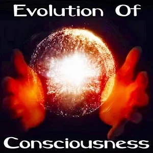
- TRACK THE EVOLUTION OF CONSCIOUSNESS THROUGH YOUR FAMILY TREE- #### Matrix Code- HOWTODIE.03- Ask your parents if there is a family tree for your family. - In many families it is customary to keep one, at least up to the fifth or sixth generation. Many families are proud of the famous people on their family tree. - XXXX - After completing this experiment, please go to your free - https://login.startover.xyzaccount and register- StartOver.xyzMatrix Code- LEARNTOD.03. This Experiment is worth 3 Matrix Points.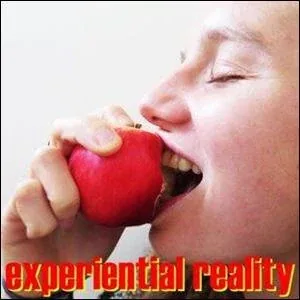
- ASK SOMEONE FOR A CONSCIOUS TOUCH- #### Matrix Code- HOWTODIE.04- Written by Ingrid:- We are a society of touchlessness, both literally and figuratively. - And how much we are longing for loving touch. With this illness, all barriers are falling. - I have never experienced as much touch as I do now. - I get creamed, face and body, I am moved to prevent ankylosis, my visitors stroke my cheeks and hold my hand incessantly, friends offer me massages which I happily accept.- Touch is infinitely good for the body, the mind, the feeling heart, the energy and the shared connection. - Without touch we die. Touch brings peace. - Experiment: Once a day, ask someone for a conscious touch.- It could be a request to rub on sunscreen, holding the hand for a moment, a hug, kneading the feet, and so on and so forth... Happy experimenting ! - After completing this experiment, please go to your free - https://login.startover.xyzaccount and register- StartOver.xyzMatrix Code- LEARNTOD.04. This Experiment is worth 3 Matrix Points. - FREE YOURSELF OF PHYSICAL INTELLECTUAL EMOTIONAL ENERGETIC AND ARCHETYPAL BAGGAGE- #### Matrix Code- HOWTODIE.03- After completing this experiment, please go to your free - https://login.startover.xyzaccount and register- StartOver.xyzMatrix Code- LEARNTOD.03. This Experiment is worth 3 Matrix Points. - EXPERIENCE THE SPEED OF LOVE- #### Matrix Code- HOWTODIE.05- Written by Ingrid:- I can't speak, only with my speaking app on the tablet. There are many situations where I don't have the tablet to hand or can't reach it, e.g. in the bathroom or while eating. - In these situations I use my now very weakened left hand to make myself understood. It sometimes takes a while before the person I'm talking to, guesses what I want to say. I celebrate every little understanding with a high five or a thumbs up. - It brings a lot of fun and real Joy into Life. - Try it out! It adjusts everyday life to the speed of Love. - The experience of Love has a speed limit. - If you are faster than the speed limit of the experience of Love - and we usually are - then Love is there, but you can't feel it. Only YOU can change this.
Celebrate together every single understanding.- After completing this experiment, please go to your free - https://login.startover.xyzaccount and register- StartOver.xyzMatrix Code- LEARNTOD.05. This Experiment is worth 3 Matrix Points.
- FREE YOURSELF OF PHYSICAL INTELLECTUAL EMOTIONAL ENERGETIC AND ARCHETYPAL BAGGAGE- #### Matrix Code- HOWTODIE.03- After completing this experiment, please go to your free - https://login.startover.xyzaccount and register- StartOver.xyzMatrix Code- LEARNTOD.03. This Experiment is worth 3 Matrix Points. - EXPERIENCE THE SPEED OF LOVE- #### Matrix Code- HOWTODIE.05- Written by Ingrid:- I can't speak, only with my speaking app on the tablet. There are many situations where I don't have the tablet to hand or can't reach it, e.g. in the bathroom or while eating. - In these situations I use my now very weakened left hand to make myself understood. It sometimes takes a while before the person I'm talking to, guesses what I want to say. I celebrate every little understanding with a high five or a thumbs up. - It brings a lot of fun and real Joy into Life. - Try it out! It adjusts everyday life to the speed of Love. - The experience of Love has a speed limit. - If you are faster than the speed limit of the experience of Love - and we usually are - then Love is there, but you can't feel it. Only YOU can change this.
Celebrate together every single understanding.- After completing this experiment, please go to your free - https://login.startover.xyzaccount and register- StartOver.xyzMatrix Code- LEARNTOD.05. This Experiment is worth 3 Matrix Points.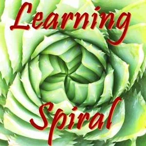
- XXX- #### Matrix Code- HOWTODIE.03- After completing this experiment, please go to your free - https://login.startover.xyzaccount and register- StartOver.xyzMatrix Code- LEARNTOD.03. This Experiment is worth 3 Matrix Points. - DO ENOUGH EMOTIONAL HEALING PROCESSES TO DISCOVER YOUR COLLECTION OF PAST LIVE VOWS- #### Matrix Code- HOWTODIE.03- After completing this experiment, please go to your free - https://login.startover.xyzaccount and register- StartOver.xyzMatrix Code- LEARNTOD.03. This Experiment is worth 3 Matrix Points. - REDUCE YOUR- PHYSICAL POSSESSIONS TO MAXIMIZE YOUR SIMPLICITY- #### Matrix Code- HOWTODIE.03- After completing this experiment, please go to your free - https://login.startover.xyzaccount and register- StartOver.xyzMatrix Code- LEARNTOD.03. This Experiment is worth 3 Matrix Points. - REINCARNATE YOURSELF NOW, EARLIER THAN SCHEDULED- #### Matrix Code- HOWTODIE.03- After completing this experiment, please go to your free - https://login.startover.xyzaccount and register- StartOver.xyzMatrix Code- LEARNTOD.03. This Experiment is worth 3 Matrix Points.
- REDUCE YOUR- PHYSICAL POSSESSIONS TO MAXIMIZE YOUR SIMPLICITY- #### Matrix Code- HOWTODIE.03- After completing this experiment, please go to your free - https://login.startover.xyzaccount and register- StartOver.xyzMatrix Code- LEARNTOD.03. This Experiment is worth 3 Matrix Points. - REINCARNATE YOURSELF NOW, EARLIER THAN SCHEDULED- #### Matrix Code- HOWTODIE.03- After completing this experiment, please go to your free - https://login.startover.xyzaccount and register- StartOver.xyzMatrix Code- LEARNTOD.03. This Experiment is worth 3 Matrix Points. - FREE YOURSELF OF PHYSICAL INTELLECTUAL EMOTIONAL ENERGETIC AND ARCHETYPAL BAGGAGE- #### Matrix Code- HOWTODIE.03- After completing this experiment, please go to your free - https://login.startover.xyzaccount and register- StartOver.xyzMatrix Code- LEARNTOD.03. This Experiment is worth 3 Matrix Points. - LEARN TO NAVIGATE TO PRESENCE AND THE INTENSITY OF AWE- #### Matrix Code- HOWTODIE.03- After completing this experiment, please go to your free - https://login.startover.xyzaccount and register- StartOver.xyzMatrix Code- LEARNTOD.03. This Experiment is worth 3 Matrix Points.
- NOTE:This website is a- Bubble in the Bubble Map- StartOver.xyz- doorway- experiments- upgrade your thoughtware- point of origin- create- possibility- knowledge- about. Your- thoughtware- with. When you- change your thoughtware- liquid state- reorganizes- feelings- emotions- upgrading your thoughtware- build matrix- consciousness- low drama- reactivity- collectively build- responsibly- LEARNTOD.00to log your Matrix Point for reading this website on- StartOver.xyz
- FREE YOURSELF OF PHYSICAL INTELLECTUAL EMOTIONAL ENERGETIC AND ARCHETYPAL BAGGAGE- #### Matrix Code- HOWTODIE.03- After completing this experiment, please go to your free - https://login.startover.xyzaccount and register- StartOver.xyzMatrix Code- LEARNTOD.03. This Experiment is worth 3 Matrix Points. - LEARN TO NAVIGATE TO PRESENCE AND THE INTENSITY OF AWE- #### Matrix Code- HOWTODIE.03- After completing this experiment, please go to your free - https://login.startover.xyzaccount and register- StartOver.xyzMatrix Code- LEARNTOD.03. This Experiment is worth 3 Matrix Points.
- NOTE:This website is a- Bubble in the Bubble Map- StartOver.xyz- doorway- experiments- upgrade your thoughtware- point of origin- create- possibility- knowledge- about. Your- thoughtware- with. When you- change your thoughtware- liquid state- reorganizes- feelings- emotions- upgrading your thoughtware- build matrix- consciousness- low drama- reactivity- collectively build- responsibly- LEARNTOD.00to log your Matrix Point for reading this website on- StartOver.xyz